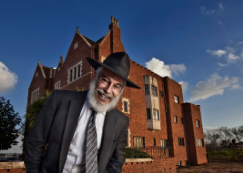
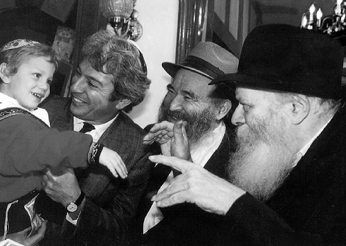

The Dollar from the Rebbe That Resulted in a Medical Miracle
R’ Ami Pykovski is a familiar figure in the world of Chabad. * He enjoyed rare kiruvim from the Rebbe that stunned even him. * In return, he has dedicated his energies to the Rebbe’s inyanim, especially in spreading the word about the impending Redemption and the Redeemer. * This is a profile of a C

He has many responses from the Rebbe about his support of shluchim, but more than anything else, the horaa that is most important to him, which was repeated again and again, was to be happy. The Rebbe did not leave this Los Angeles businessman alone for a minute. The Rebbe turned him into a happy man, whose life changed completely since he joined the ranks of Chabad personalities.
NIGGUNIM WILL ACCOMPANY YOU
Shabbos, Parshas Balak 5751: 770 was packed with Chassidim during the Rebbe’s farbrengen. Suddenly, in the middle of the singing, the Rebbe smiled broadly at a young businessman sitting in a corner and talking to the Chassid, Rabbi Shmuel Heber. Ami Pykovski noticed the Rebbe looking at him and returned the smile. The Rebbe raised his hand in an encouraging motion and Ami began clapping enthusiastically. This went on for some time. Ami clapped vigorously and the Rebbe continued to watch him with a smile, all the while raising his hands in joyous motions, indicating to Ami to continue what he was doing.
Till today, Ami gets all excited when he remembers those moments.
“Suddenly, I found myself among thousands of Chassidim, clapping my hands enthusiastically like a child, and smiling all the while.”
Ami got an even bigger surprise at dollars on Sunday. Ami passed by the Rebbe and received a dollar for tz’daka, and the Rebbe said to him, “The niggunim during the farbrengen should accompany you in all matters. Be happy, especially at work.” Then the Rebbe said a line that left him stunned, “Thank you for helping me yesterday with the dancing. This dollar is for the dancing on Shabbos.” The Rebbe had encouraged him with simcha and then gave him a dollar for helping him!
This particular interaction is just one example out of a series of outstanding kiruvim which this businessman from Los Angeles, who later became a Lubavitcher Chassid, enjoyed. His connection with Chabad began through occasional meetings with Rabbi Binyomin Lisbon of Los Angeles who knew Ami over thirty years ago. Every so often, he was in touch with Ami as part of his work in reaching out to businessmen in Los Angeles.
At some point, Ami traveled to the Far East to meet with the manager of a jeans company.
“Until then, I was always particular not to eat pork in business meetings and I fully intended to stick to this rule of mine on this trip too. However, after signing the contract, he invited me to a restaurant where I inadvertently ate pork. Although I did not understand the significance of keeping kosher, I felt I had crossed a red line. I went back to my hotel room and suddenly felt nauseated. That night I vomited and felt awful. I returned to Los Angeles and was very upset and regretful about what had happened.
“A few weeks later, I decided to fly to Eretz Yisroel on business. I told Rabbi Lisbon and said I wanted to meet with a serious rabbi and talk to him. R’ Lisbon said, ‘In New York there is a person that is the switch for the entire world – the Rebbe.’ We agreed that I would visit 770 during my stopover in New York.
“Before I flew to New York, I sat in the airport and wrote a letter to the Rebbe. I told him about myself in brief and asked for a bracha for a number of personal matters. It did not occur to me to mention the incident in the Far East even though it was constantly on my mind.
“I arrived in 770 on Friday morning. I knocked at the office door and told R’ Binyomin Klein that I had come to meet with the Rebbe. He explained that this was not possible, but he asked me to leave my letter for the Rebbe and a telephone number at my host’s home. He said he would call as soon as he had an answer from the Rebbe for me.
“When I arrived at the house, I felt exhausted. I felt very weak and collapsed on the couch and fell into a deep sleep. A few minutes later, the phone rang. It was R’ Klein who said, ‘An answer came out already.’ He asked me to take a pen and paper and to write down the Rebbe’s answer which was: be careful about the kashrus of food.
“I was stunned. I hadn’t written to the Rebbe about what happened and yet the Rebbe responded to precisely what had been on my mind. R’ Klein added: Before continuing to Eretz Yisroel, come here because the Rebbe wants to give you three dollars for you to give to tz’daka.”
That is how Ami’s relationship with the Rebbe began.

CLOSE YOUR BUSINESS ON SHABBOS
The next step on Ami’s personal journey had to do with his business. At that time, he was considered a rising star in the Los Angeles fashion business world.
“On a typical Saturday, I would make $5000 and this was a major portion of the weekly sales. I wanted very much to close the business on Shabbos, but I calculated that if I did that, I would lose $20,000 a month. Finally, after a lot of thought, I decided I had no choice but to go ahead. The business would be closed on Shabbos. However, although it would be closed on Shabbos, I planned on working until late Friday night.
“I wrote to the Rebbe about my decision to close the business on Shabbos without saying anything about Friday. The Rebbe’s answer was: ‘Start from before sunset and great is your merit to spread Judaism with joy.’ The Rebbe enclosed eighteen dollars and wrote that I should give them to tz’daka locally.
“Now I had no choice. The business would be closed on Shabbos. In order to do so, I had to break a contract with the landlord of the space I rented for my store. It was a huge area that was spread out over an entire block and the cost of canceling the contract was enormous. I tried convincing friends to buy the contract off of me, but nobody wanted to. When I saw that I had no option, I decided to inform the landlord that I was canceling the contract.
“When I went to his office, I was told that he wasn’t there. I went back to the store and a businessman whom I did not know walked in and said he wanted to buy the property from the landlord. I asked him why he had come to me and he said that he had already been to the landlord who had told him that he couldn’t sell it since I had a ten year contract. He could only sell it if I agreed to cancel the contract.
“I was still unsure how much money to ask from him for breaking the contract, when he offered an amount that was much higher than I would have dared to ask for. We signed an agreement and I evacuated the premises. With the money I got, I bought a building and set up a clothing factory that I never would have dreamed I could build. In the normal course of things, I would have had to work for decades in order to achieve such a thing; suddenly, the Rebbe had shortened the way for me. It was all in the merit of deciding to keep Shabbos.
“The day I received the letter from the Rebbe with eighteen dollars, the shliach Rabbi Amitai Yemini came to my office. I asked him why he had come and he said that my business card had been sitting in his office for a long time and he had finally decided to come and visit me. I asked him to kasher my kitchen at home. He came that night, accompanied by his wife, and they got to work. A lawyer friend of mine called me frantically, saying there was a couple in my house who were trying to burn down my kitchen.”
SURPRISE ENCOUNTER WITH THE MILKMAN’S SON
Ami became friendly with R’ Berel Weiss, who was known as the Rebbe’s g’vir (mogul, tycoon). A relationship developed that went far beyond business. When they passed by the Rebbe together and told him about the new business they planned on starting together, the Rebbe gave each of them a dollar and said, “This is for the partnership.”
One day, R’ Berel went to Ami and asked him to take on the role of chairman of the dinner for Oholei Torah in Crown Heights.
“I did not know what he was talking about. Berel told me that he wanted me to bring some friends to the dinner, and that was all. So I was taken aback when my secretary called and said that a booklet had come in the mail with my picture on it. It was the invitation to the dinner.
“We got on the flight to New York and R’ Berel asked me whether I had prepared a few words to say at the dinner. To my surprise, he explained that I was going to offer the opening remarks at the dinner and that I had to prepare a speech. All I had wanted to do was to help the mosad and bring some friends who would make donations – I hadn’t planned on addressing six hundred people! What would I say to them?
“On Shabbos, we davened in 770. Next to me stood R’ Yechiel Malov. We got to talking. When I told him that I grew up in northern Tel Aviv, it turned out that we grew up in the same neighborhood on neighboring streets. The biggest surprise was when I discovered that his father, the neighborhood milkman who was a figure of my childhood, was the Chassid who put t’fillin on me for the first time (other than my bar mitzva). He came to see me when I was in the hospital as a boy and he suggested that I put on t’fillin.
“After I put them on, he asked me to put t’fillin on every day and I said I would, although I did not keep my promise. A few weeks later, he knocked at the door and asked my father whether I was keeping my promise. My father said he did not know whether I was putting t’fillin on every day, but if I had made that commitment, then he would take on the mitzva too. From then on, my father put t’fillin on every day.
“This experience was engraved in my memory and was one of the most significant encounters with Judaism in my life up to that point. And then, there I was, standing with his son, and we embraced. I decided to tell this story at the dinner and to share with the audience how every positive activity contributes to shaping the personality of a Jewish child. I asked R’ Malov to join me at the dinner and when I finished telling the story, I asked him to stand up. Everyone else stood up too and applauded. It was extremely moving.”
R’ Ami said that on Sunday, he and his son passed by the Rebbe for dollars. “After the Rebbe gave me a dollar, he asked my little boy whether he was going to the dinner. I jokingly said that he will be the chairman. The Rebbe gave him a dollar and said, ‘This is for the chairman of the dinner.’ My son actually attended the dinner and went up on stage with me when I spoke and everybody clapped.”
BUSINESS GUIDANCE
Over the years, Ami brought many of his friends to the Rebbe and some of them joined Machne Israel. Each of them saw personal salvation and thanked Ami for connecting them to the Rebbe. Ami’s friends in Los Angeles got used to asking the Rebbe about every step they made and they received amazing answers. He says that they all experienced the Rebbe’s G-dly vision and realized he is a holy man.
When speaking about businessmen who ask the Rebbe about their business matters, he tells the following story:
“When I wanted to name my company, I considered a number of possibilities. I finally decided to call it ‘Shmattes,’ a lighthearted name that was easy to remember. I wrote to the Rebbe about this and a day later, the secretary called me and conveyed the Rebbe’s response: ‘Chazal refer to clothing as m’chabdusa (that which gives us honor and dignity), especially when one is careful about shatnez. I will mention it at the gravesite.’ R’ Groner told me that the Rebbe wanted me to make clothing out of shmattes and not the opposite. I ended up naming the company for the street the factory was on and was very successful.
“Another example where I saw Divine Providence was after I received dollars from the Rebbe and decided to keep Shabbos. I had an offer to open a chain of stores called Indian Head in Los Angeles, but I decided not to get involved in retail so I wouldn’t have to work on Shabbos. Instead, I decided to invest in the manufacture of clothing and to offer it to Macy’s. When I went to the buyer at the company, she thought I would show her dozens of styles, as was to be expected from companies that do business with Macy’s, but I came with just one style. It turned out she was very impressed that I had come with just one style. She said that because I had the guts to come to them, she was excited about working with me and she placed an order worth $25,000.
“That was the first time that I worked with a company on such a large scale and I was very excited. But when the clothing came from the dyeing process, I was devastated. They had mixed up the colors and every pair of pants came out in a different color. When I saw this, I began to cry. I was sure I had lost all my money, which was a large amount in those days, as well as the opportunity to work with Macy’s.
“After vacillating for a while, I decided to send them the merchandise anyway and I left the office for two weeks, afraid of the angry phone calls I would get. Upon my return, I found dozens of messages from the company on my answering machine. The phone rang just then and the company rep was on the line. ‘I’ve been looking for you for two weeks,’ she said. ‘Your pants were incredibly successful. They are totally sold out!’”
Once again, keeping Shabbos was a blessing for Ami.
“The first year that I closed the business on Shabbos, I was concerned about my financial situation. After all, I had closed a successful business. I didn’t know whether I’d be able to pay the high tuition in the Chabad schools of Los Angeles. I told the principal of the school my daughter attended that I was switching her to the Hillel school. I was sorry to switch her but I thought I had to, due to my circumstances.
“In Elul, two weeks after the start of the school year, my family flew to the Rebbe and we passed by the Rebbe with our children. The Rebbe pointed at my daughter and asked which school she attended. I was embarrassed to tell the Rebbe that I had taken her out of Chabad. I said she learned in a branch of Chabad, but the Rebbe made as though he didn’t hear me and asked me what I said. The Rebbe finally said to me in English, ‘She was born to be a queen of Chabad,’ and he instructed me to put her back in a Chabad school.
“That year, not only was I able to pay her tuition, but I was also able to pay the tuition for two other girls in the school.”
THE BRACHOS COME TRUE
R’ Ami Pykovski received many letters from the Rebbe with specific instructions regarding his personal life. At the beginning of 5752, he had yechidus with the Rebbe with friends of Machne Israel. He told the Rebbe that the previous year, the Rebbe had blessed him with a year of success, as was befitting a year of “I will show them wonders,” and he wanted such a bracha for this year too.
The Rebbe asked him whether he had listened to the sicha that had just been said, about the acronym of “ba’kol mi’kol kol.” The Rebbe said to him, “I meant it literally, ba’kol, mi’kol, kol.”
Ami says that that year he felt the bracha in everything he did. When I asked him what he meant by that, he explained, “That was the year I became a Chassid.”
During the course of that year, Ami got fully involved in the Rebbe’s inyanim and was very successful.
“Whenever shluchim came to Los Angeles, we would take them to Jewish businessmen. Whoever donated to the Rebbe’s cause had incredible bracha. Whoever became a partner in the Rebbe’s inyanim experienced unusual bracha in business.”
There were two brothers who did not understand why they should donate and they donated nonetheless. They suddenly saw a turnaround in their business. And once, a wealthy man went out of his way to help the Rebbe’s inyanim and he received a surprise windfall in the exact amount of his donation. There are more stories, one more amazing than the next.
Ami has already donated four sifrei Torah in memory of people dear to him; in Av he plans on donating another Torah to the new Chabad center that he helped establish in Kiryat Arba in memory of the young shlucha, eight year old Chaya Mushka Ettia a”h. This Torah will be l’ilui nishmas Ami’s mother a”h.
Ami had a Torah written in memory of his soccer trainer, Dovid Shweitzer a”h. Ami used to be a promising soccer player in Israel. Over the years he used his connections with friends in the world of soccer to spread Judaism.
“On one of my visits to Eretz Yisroel, I met with Dudi a”h with whom I was very close. He asked me jokingly who would look at him when he went to heaven after 120 years. I told him, ‘When you get up there, tell them you are Pykovski’s friend and they’ll take care of you.’ The next day, I got a phone call from a friend who said that Dovid had died. I was shocked. I thought – now I have to keep my promise to him from the day before he died, and I decided to write a Torah in his z’chus.
“We brought that Torah to the Chabad yeshiva in Ramat Aviv, but we finished writing the letters on the soccer field where Dovid Shweitzer served as a trainer. The Chief Rabbi at the time, Rabbi Yisroel Meir Lau, attended the event. He said that he had attended hundreds of such events in his life, but he had never experienced a moving one such as this, with the soccer players on one side of the field and people writing letters in the Torah on the other side.
“Before the Israeli elections of 5749, R’ Groner called me and said the Rebbe wants people to work on getting people to vote for Gimmel and he asked me to get involved. I told him I couldn’t travel to Eretz Yisroel because I was busy and he asked me, ‘What will happen if you close your business for a few days?’
“I was convinced and flew to Eretz Yisroel. There I met Avi Piamenta who had also come to help promote Gimmel. The next day, we rented a big hall in the port of Tel Aviv and held a big event for everyone in the Israeli entertainment world. We called the event, ‘Salute to the Lubavitcher Rebbe’ and didn’t say a word about Gimmel, but by the end of the evening, everyone said they would vote for Gimmel. It turned out that many of them had been influenced by that evening and made significant changes in their lives.”
Another community that Ami is in touch with consists of those who fought in the underground. His father fought for Lechi and was a friend of many heads of the Irgun who later became leaders of the country, including former president Yitzchok Shamir. Ami used these connections for many good things, some of which he still cannot speak about today. He met with Shamir as prime minister and brought Chabad askanim to meet with him. On more than one occasion, he was asked to convey a message to Shamir from the Rebbe and each time, Shamir listened to him.
THE CALL OF THE HOUR: ACHDUS
In the past twenty years, Ami has been an enthusiastic promoter of the Besuras Ha’Geula among his friends and acquaintances and has used his money to spread the Rebbe’s prophecy of “hinei, hinei Moshiach ba.”
“Today, all my buddies from the business community accept what the Rebbe says and when you tell them that we are in the time of Geula, they understand and accept this. The Rebbe’s prophecy has penetrated the world and we really feel that the world is waiting for Moshiach.”
The subject that is closest to Ami’s heart is unity in Chabad. He spares no effort in being involved in promoting achdus. He recently decided to work on an achdus campaign within Chabad involving Chabad publications and Chabad communities.
What is Ami’s message to Chabad Chassidim about achdus?
“From the day I got involved with Chabad and the Rebbe, what got me more than anything else was the achdus among Chassidim. I saw how all Chassidim are one family with representatives around the world. What won my heart was the love among shluchim and Chassidim of the Rebbe. I attribute my t’shuva to the love I felt among Chassidim. Chazal say that just as their faces are different, so too people’s views are different, but there cannot be machlokes among the Rebbe’s children. This topic is dear to the Rebbe and we must sit together and farbreng. My dream is for a committee to form in every shul that will be comprised of mashpiim who will work on achdus and make achdus farbrengens.”
Ami made aliya a year ago and he now lives in Kfar Chabad. He is involved in a new project which will develop research and course materials on proper nutrition and health for the general public and for Chassidim.
“I received many instructions from the Rebbe regarding simcha and as a former athlete involved in the world of sports, I know that in order to serve Hashem with joy, you need to follow the Rambam’s directives about ‘a healthy soul and a healthy body.’ I decided that this is the best way to carry out the Rebbe’s instructions.”
***
In conclusion, Ami thanks the Rebbe.
“I want to thank the Rebbe from the depths of my heart for everything I received from him. There are just two words that I feel I must say: Rebbe, thanks!”
THE DOLLAR FROM THE REBBE THAT RESULTED IN A MEDICAL MIRACLE
During the interview with R’ Ami Pykovski, he told me a miracle story that he had a part in:
“In Los Angeles, I was in touch with a lawyer and over the years, we were mekarev him to the Rebbe. One day, I got a phone call from a close friend who told me that our mutual friend (the lawyer) was in the hospital in serious condition. We went to visit him and also sent a request for a bracha to the Rebbe. We did not receive a response.
“After a few days, the lawyer called me and said that he had been transferred to a hospice; the doctors said he was a terminal case. I told him he had to send someone from his family to the Rebbe for dollars and ask the Rebbe for a bracha.
“His daughter flew to New York and on Sunday, she passed by the Rebbe and asked for a bracha. The Rebbe gave her a dollar and said the dollar should be given to tz’daka in a pushka in his room. The daughter sent the dollar by express mail and had someone give it to her father.
“The next day, the special delivery person walked in to give him the dollar. Right behind him walked in a doctor who was all aflutter over a set of new medical results. He said that incredibly, all the test results had changed and showed that the patient was fine.
“The lawyer lived many more years.”
T’FILLIN IN THAILAND AND A SURPRISING VISIT IN TEL AVIV
Ami is very involved in Mivtza T’fillin. Over the years, he has bought dozens of pairs of t’fillin for people who committed to putting them on every day.
“On one of my business trips to the Far East, I spent Shabbos in Thailand with the shliach, Rabbi Nechemia Wilhelm. At the Shabbos meal there were a few dozen young people. I announced that I would give t’fillin as a gift to whoever would commit to putting on t’fillin.
“A young Israeli sat next to me who wore the red robes of the local idol worshipers and who looked like a Thai monk. He raised his hand and said he committed to putting on t’fillin. I was shocked, but I kept my word and sent him t’fillin.
“Two years later I was visiting in Eretz Yisroel and I spent a day learning in the yeshiva in Ramat Aviv. A young Lubavitcher approached me and asked me whether I recognized him. I said he must be mistaken since we had never met before, but he insisted that we knew one another. He brought me his t’fillin and said that he was the fellow from Thailand who had become a baal t’shuva.”
Sholom Ber Crombie. "The Dollar from the Rebbe That Resulted in a Medical Miracle." Beis Moshiach, no. 834 (May 16, 2012).